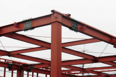

2024年
問題94 鉄骨構造とその材料に関する次の記述のうち，最も不適当なものはどれか．
（1）鋼材の強度は温度上昇とともに低下し，1,000℃ではほとんど零となる．
（2）鉄骨構造の床には，デッキプレートなどが用いられる．
（3）鉄骨構造に使用される鋼材には，形鋼，平鋼，鋼板等の種類がある．
（4）鋼材は，炭素量が増すと靭性が向上する．
（5）鉄骨構造は，部材の接合によってラーメン構造，トラス構造等に大別できる．
2024年
問題94 正解（4） 頻出度AAA
鋼は炭素の含有量が増加すると強度は高くなるが伸びや靭性，溶接性が低下する．
炭素の含有量が0.02%～2.1%の鉄材が鋼（炭素鋼）と呼ばれるが，その中でも炭素の含有量でその性質が異なるので，その用途も違ってくる（2024-94-1表参照）．
2024-94-1表 炭素含有率による鋼の種類
| 炭素含有率［%］ | 〜0.1 | 0.1〜0.25 | 0.25〜0.3 | 0.3〜0.6 | 0.6〜2.14 |
| 分類 | 低炭素鋼 | 中炭素鋼 | 高炭素鋼 | ||
| JIS呼称 | SPC材
冷間圧延鋼板 使用例：冷蔵庫など白物家電の筐体 |
SS材
一般構造用圧延鋼材 使用例：鉄筋，鉄骨 |
ー | SK材
炭素工具鋼鋼材 使用例：ヤスリ，バネ，機械部品 |
|
| SC材
機械構造用炭素鋼鋼材 使用例：べリング，エンジン部品 |
|||||
前問の鉄筋コンクリート用棒鋼も，SS材である．
-(1) 鉄骨造は比強度が大きく，靭性に富み耐震的にも有利なので，大スパン構造，超高層ビルに用いられるが，欠点として，耐火耐食性に劣り，耐火被覆，防錆処理を要する．鋼材は 500℃で強度が 1/2，1,000°Cで0となり，1,400～1,500℃で溶解する．不燃材料ではあるが耐火材料ではない．
-(2) ，-(3) 形鋼の種類，建築部位と使用鋼材は2024-94-1 図，2024-94-2表参照．

2024-94-2表 建築部位と使用鋼材
| 建築部位 | 形鋼 |
| 母屋 | 山形鋼 |
| 鋼柱 | 角型鋼管 |
| 梁，小梁 | Ｈ形鋼 |
| スラブ床の下地 | デッキプレート （面が波型の幅広の帯鋼） |
| 筋交い | 溝形鋼，ターンバックル |
-(5) ラーメン構造とは，柱と梁が剛に接合された骨組．剛節骨組みとも呼ぶ（2024-94-2図参照）．ラーメン（Rahmen）とはドイツ語で「枠」の意味．応力としては，柱には曲げモーメント，せん断力，軸方向力，梁材には曲げーメントとせん断力が生じる．

出典 （株）ポラリス・ハウジングサービス
https://polaris-hs.jp/zisyo_syosai/ramen.html
トラス構造とは，部材を三角形状にピン接合した単位を組み合わせて得られる構造体骨組で，応力は軸方向力のみ生じる構造である．
部材は圧縮や引張の軸方向力には強いが曲げには弱い（割り箸を引きちぎるのは無理だが，折るのは簡単）性質を利用して，トラスでは接点に作用する荷重を部材軸方向の応力に分解して伝える．トラスは東京スカイツリーなどの高層建築物も可能にした建築学上の偉大な発明である（トラス構造の例）．